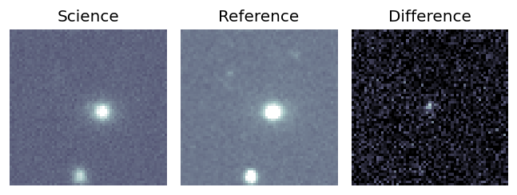
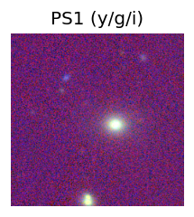
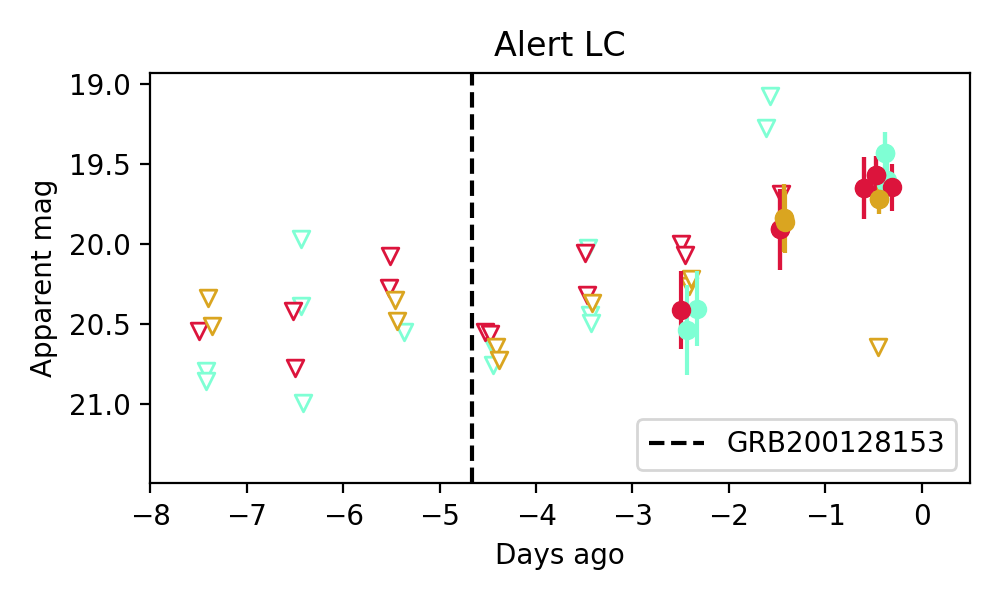

Candidate List 20200201Previous Day Next Day
Section 1: New Sources (age<1d) Section 2: Old (1-5d) sources observed last nightplaceholder
Section 2: Older Sources Observed Last Night (1)
0. ZTF20aakypiu (Afterglow?) (TNS: A) [Back to Top] [Share] [Trigger Swift] [Fritz] [Lasair]RA, Dec: 172.8073, 34.50021 11h31m13.75s, 34d30m0.74sGalactic (l, b): 184.79871, 71.31108 ext(g-r) = 0.029
SDSS (10 arcsec):Found SDSS spec-z: z=0.20; peak abs mag = -20.65
PS1: 0 sources in 3 arcsec
LegacySurvey: 1 sources in 3 arcsec Closest: d = 5.04 arcsec, 141.9 deg (east of north) photoz=0.68 (68% bounds 0.26, 1.0), type=REX peak abs mag = -23.71 (68% bounds -21.19, -24.72)

Extinction-corrected gr color:
From alerts: -0.09 +/- 0.09 mag
Extinction-corrected gi color:
From alerts: -0.22 +/- 0.09 mag
Extinction-corrected ri color:
From alerts: -0.13 +/- 0.09 mag
Rise Rate:
g: 0.46 mag/day
r: 0.36 mag/day
i: 49.49 mag/day
Fade Rate:
g: -99 mag/day
r: -99 mag/day
i: 0.83 mag/day